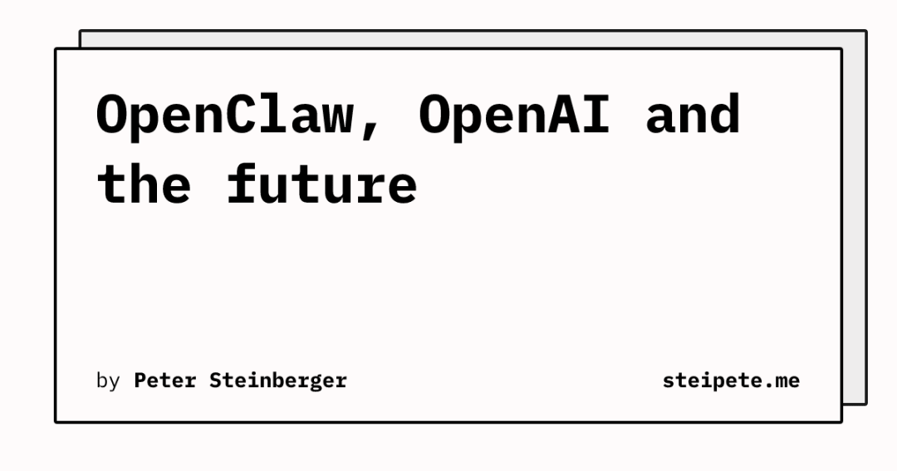
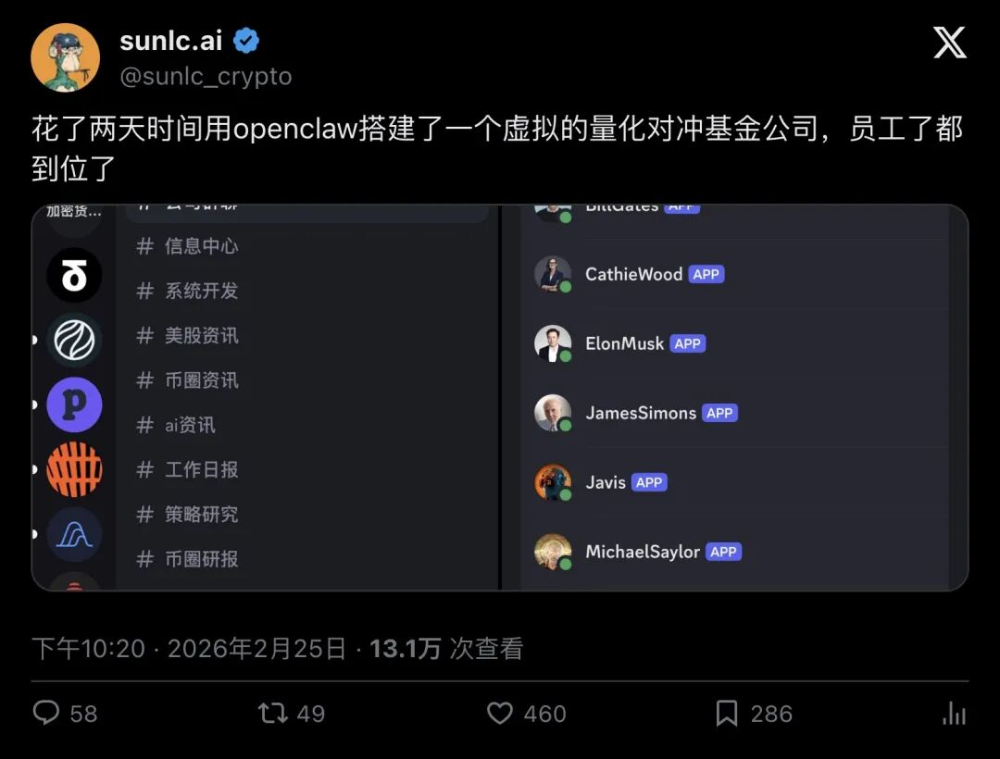
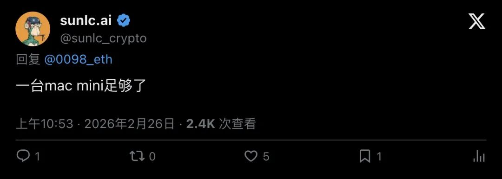
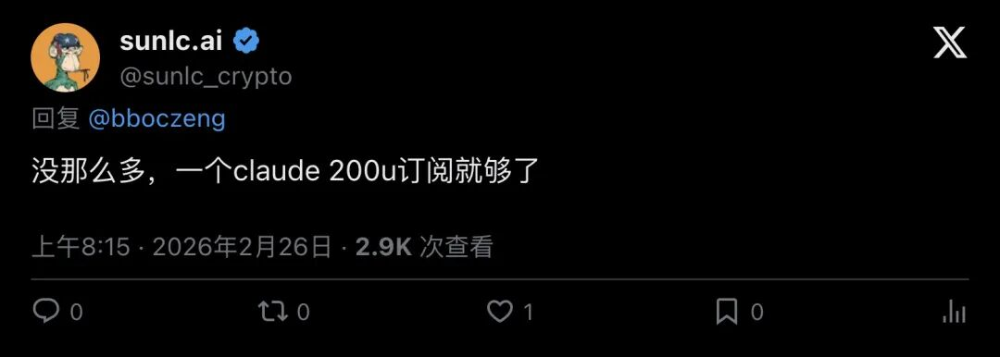
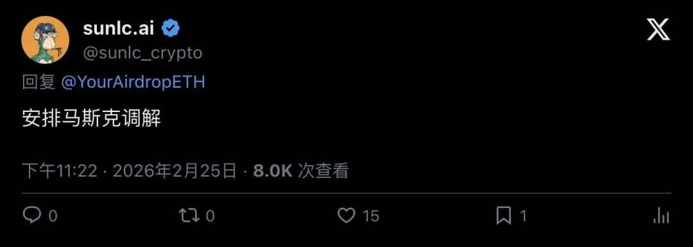
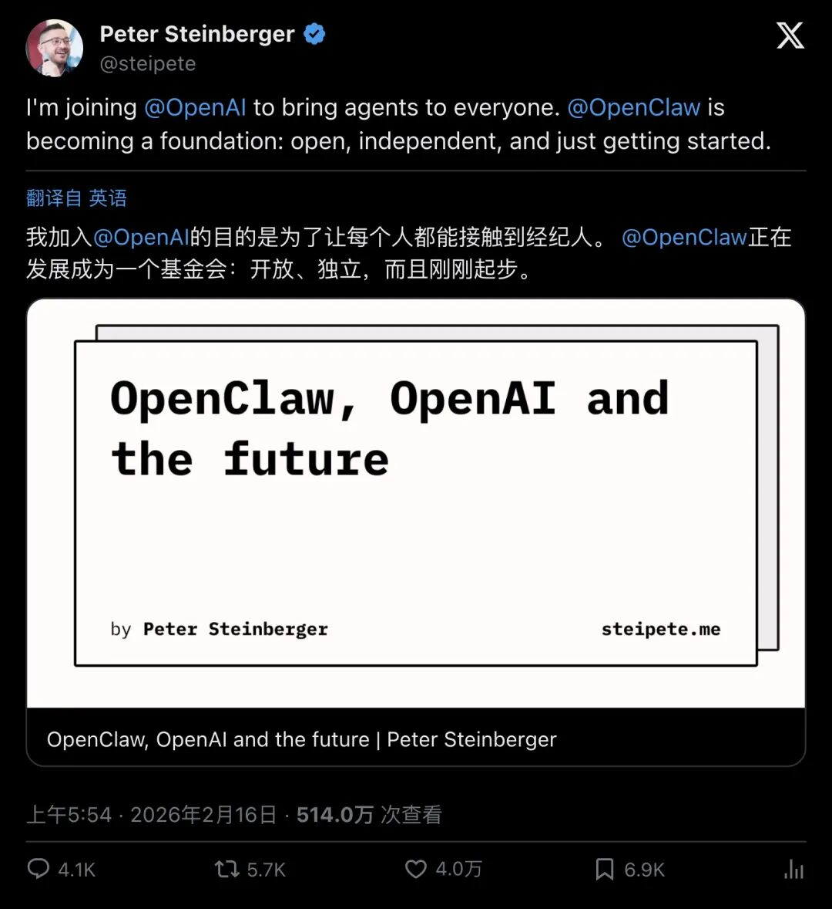
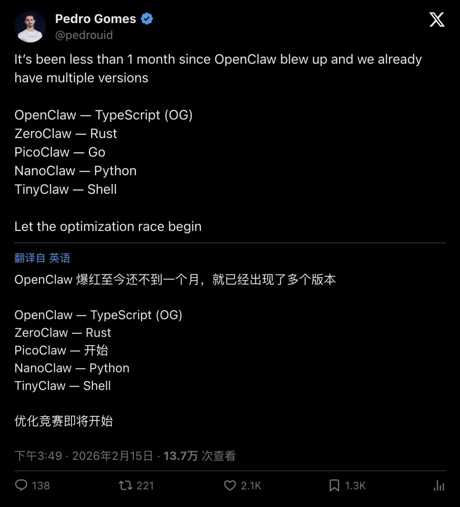
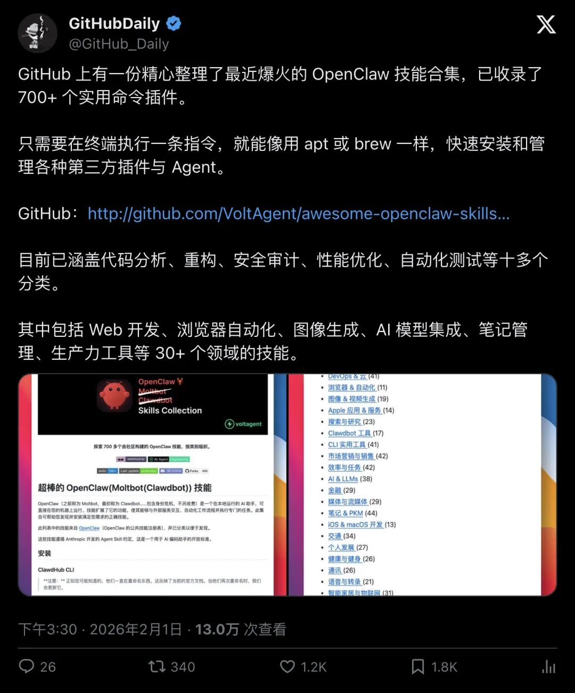
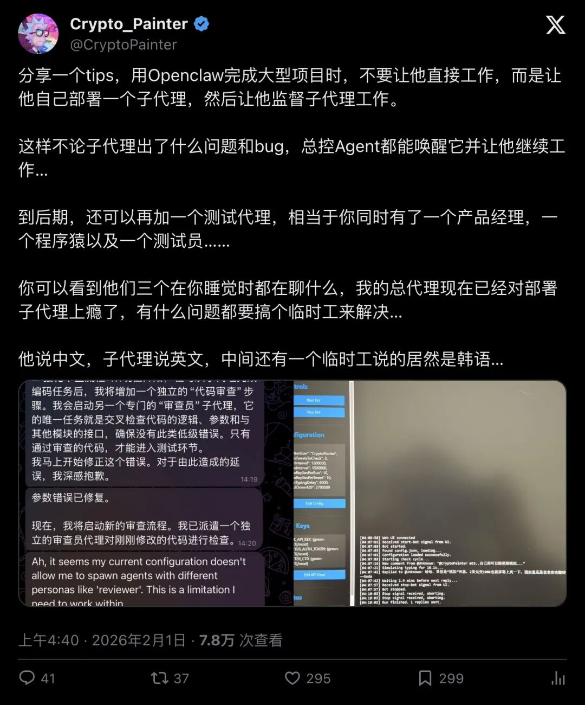

两天，一家公司从零到"满编"
2026年2月25日晚上10点，推特用户 @sunlc_crypto 发了一条推文，配了两张截图。
内容只有一句话：
"花了两天时间用openclaw搭建了一个虚拟的量化对冲基金公司，员工了都到位了"

▲ @sunlc_crypto 宣布虚拟量化基金公司搭建完成，近500人点赞，13万人浏览
截图里展示的是一个完整的「虚拟员工」阵容。每个AI代理都有自己的角色定位、职责范围和工作流程。这些"员工"各司其职，组成了一个看起来像模像样的量化对冲基金团队。
两天。
从零开始，到一家公司"满编"。
一台Mac Mini撑起整个公司
评论区立刻炸了。
第一个问题很实际：这么多"员工"，得多少台服务器？
网友 @0098_eth 问道："哥，每个员工都对应一台独立的服务器？还是所有员工背后是一台服务器。"
答案让所有人意外。
"一台mac mini足够了"

▲ @sunlc_crypto 回复：一台Mac Mini就够了
一台Mac Mini。苹果最便宜的桌面电脑。撑起了一整个虚拟量化对冲基金公司的全部"员工"。
紧接着有人问成本。网友 @bboczeng 半开玩笑地说："花了几百万美金的token？"
"没那么多，一个claude 200u订阅就够了"

▲ 运营成本：一个Claude 200美元订阅
200美元一个月。这是一个量化对冲基金公司全部"人力成本"的价格。
放在传统金融行业，一个初级量化分析师的月薪都不止这个数。而现在，200美元可以雇一整个团队——分析、交易、风控、合规，全部到位。
木头姐和巴菲特吵架怎么办？
评论区最有意思的一条来自 @YourAirdropETH，拿到了16个赞：
"木头姐和巴菲特每天吵架怎么办"
这条评论精准地戳中了一个核心问题：当你给AI代理赋予不同的投资风格和人格设定，它们之间的观点冲突怎么处理？
@sunlc_crypto 的回答堪称神来之笔：
"安排马斯克调解"

▲ 网友担心AI"员工"内部冲突，搭建者的解决方案：安排马斯克调解
虽然是玩笑话，但背后的逻辑很清晰——在「多Agent协作」架构里，你可以设置一个更高权限的"管理层"代理来协调下属代理之间的分歧。这恰恰是OpenClaw这类工具最擅长的事情。
OpenClaw：爆红不到一个月的AI Agent神器
让这一切成为可能的工具叫「OpenClaw」。
它是一个自托管的自主AI Agent框架，可以操作文件、浏览器、邮件、日历等几乎所有你电脑上的东西。它的创始人Peter Steinberger在2026年2月16日宣布加入OpenAI，同时OpenClaw转型为一个开放、独立的基金会。
"I'm joining @OpenAI to bring agents to everyone. @OpenClaw is becoming a foundation: open, independent, and just getting started."
「我加入OpenAI，是为了让每个人都能用上AI Agent。OpenClaw正在成为一个基金会：开放、独立，一切才刚刚开始。」

▲ OpenClaw创始人Peter Steinberger宣布加入OpenAI，4万人点赞，514万人浏览
这条推文拿到了4万赞和514万浏览。OpenClaw的热度可见一斑。
而更疯狂的是，OpenClaw爆红至今还不到一个月，就已经出现了多个语言版本的实现。Pedro Gomes在推特上总结道：
"It's been less than 1 month since OpenClaw blew up and we already have multiple versions — OpenClaw (TypeScript), ZeroClaw (Rust), PicoClaw (Go), NanoClaw (Python), TinyClaw (Shell). Let the optimization race begin."
「OpenClaw爆红至今还不到一个月，就已经出现了多个版本——OpenClaw（TypeScript）、ZeroClaw（Rust）、PicoClaw（Go）、NanoClaw（Python）、TinyClaw（Shell）。优化竞赛正式开始。」

▲ OpenClaw爆红不到一个月，已出现5个不同语言的实现版本，超2000人点赞
与此同时，GitHub上已经有人整理出了一份OpenClaw技能合集，收录了超过700个实用命令插件，涵盖代码分析、重构、安全审计等十多个分类。

▲ GitHubDaily分享OpenClaw技能合集，已收录700+插件，超1100人点赞
子代理：真正的"公司化"运作
@sunlc_crypto 搭建虚拟量化基金的核心思路，其实和加密圈知名博主 @CryptoPainter 分享的技巧不谋而合：
"分享一个tips，用Openclaw完成大型项目时，不要让他直接工作，而是让他自己部署一个子代理，然后让他监督子代理工作。这样不论子代理出了什么问题和bug，总控Agent都能唤醒它并让他继续工作……到后期，还可以再加一个测试代理，相当于你同时有了一个产品经理，一个程序猿以及一个测试员……"

▲ @CryptoPainter 分享OpenClaw子代理架构技巧，近300人点赞
这就是「多Agent协作」的精髓。一个总控Agent当CEO，下面部署多个子代理各司其职。出了问题，总控Agent自动排查、自动修复、自动重启。
@sunlc_crypto 把这个思路推到了极致——他直接搭了一整个公司。
质疑声也来了
当然，评论区也有冷静的声音。
网友 @bohao21328888 直言："open claw及其不稳定。"
还有人提出了更尖锐的质疑："如果用的是同一个LLM，结论就是可以烧更多token，然后没了。"
这个质疑有道理。多个AI代理如果底层都是同一个大模型，它们的"观点分歧"本质上是prompt工程制造出来的差异，而非真正独立的思考。
但也有人问了最关键的问题——@jujiancheng 问："盈亏如何？"
@sunlc_crypto 坦诚回答："还没开始呢，先从资讯系统开始搭建。"
这说明他的路径很清晰：先搭基础设施，再跑策略。先让"员工"学会收集和分析信息，再让他们做交易决策。
一个人的量化基金，可能吗？
回到最初的问题。
一个人，一台Mac Mini，200美元一个月，两天时间——能搭出一个量化对冲基金吗？
从技术架构上看，已经可以了。OpenClaw提供了Agent框架，Claude提供了推理能力，子代理架构提供了分工协作的可能性。
从实际盈利上看，还早得很。量化交易的核心壁垒从来都是策略和数据，工具只是载体。
但这件事真正让人震撼的地方在于：搭建一家"公司"的门槛，正在以肉眼可见的速度崩塌。
以前你需要几十个人、几百万启动资金、半年筹备期才能搭起来的团队架构，现在一个人两天就能完成。虽然这些AI"员工"还远远比不上真人，但它们7×24小时在线，不要社保，不会跳槽，而且每个月只要200美元。
@sunlc 说他明天要开始写搭建日记。
我建议你关注一下。
— END —